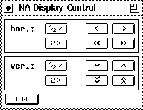
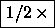

The display control window appears, when clicking on button on the right side of the network analyzer window. This windows is used to easily change the area in the display of the network analyzer.

The buttons to change the range of the displayed area in horizontal direction have the following functions:

:The length of the interval is to be bisected. The lower bound remains.
:
The length of the interval is to be doubled. The lower bound remains.
:
Shifts the range to the left by the width of a grid column.
:
Shifts the range to the right by the width of a grid column.
:
Shifts the range to the left by the length of the interval.
:
Shifts the range to the right by the length of the interval.
The buttons to change the range in vertical direction
have a corresponding function. To close the display control window, press
the  button.
button.